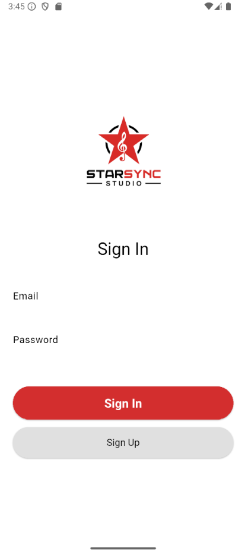

StarSync-GO
StarSync-GO is a dart project that acts as a companion app to my companies DAW (which is displayed on this website!) it acts as a social media/companion to this propriotary software, where you can find and upload sounds and music. You can also share posts and follow other people on it!
Flutter,Dart,Firebase Auth,Firebase Firestore
This project taught me a lot about backend development and how to handle user data. I had previously worked on frontend applications so this really helped my understanding.